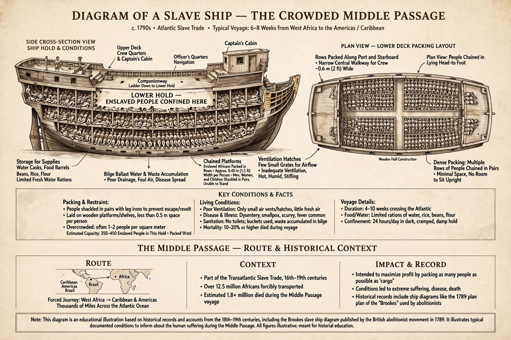

| Atlantic slave trade | |
|---|---|
| Period | 16th–19th centuries |
| Enslaved Africans transported | about 12.5 million embarked |
| Main destinations | Brazil, Caribbean, North America |

The Atlantic slave trade or transatlantic slave trade involved the transportation by slave traders of enslaved Africans, mainly to the Americas. From the 16th to the 19th century, roughly 12.5 million Africans were shipped across the Atlantic, of whom about 10.7 million survived the Middle Passage, to labour on plantations producing sugar, tobacco, cotton, coffee and other commodities.
Portugal began the trade in the 15th–16th centuries, supplying Madeira, São Tomé and Brazil. Spain, the Netherlands, France and Britain followed; Britain became the leading carrier in the 18th century. Most enslaved people went to Brazil (about 40–45%) and the Caribbean; a smaller share went directly to North America. Africans were captured in wars and raids, sold by African and European traders at coastal forts, and endured a Middle Passage voyage of weeks under brutal conditions, with mortality often around 10–15%.
Denmark abolished its trade in 1803, Britain in 1807 (Slave Trade Act) and the United States in 1808; slavery itself was abolished in the British Empire in 1833–38, in the United States in 1865, and in Brazil in 1888. Illegal trading continued to Cuba and Brazil into the 1860s.
The trade depopulated parts of Africa, built wealth in Europe and the Americas, created the African diaspora, and left enduring legacies of racism and inequality that remain subjects of historical study and reparations debates.